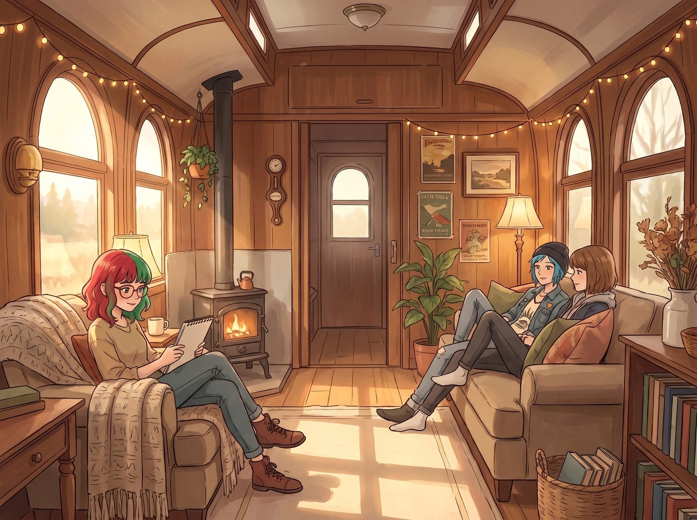

無用之物的合法性

「嘿，Maxine，既然我們現在有了無國界白名單的神仙特權，妳說我們能不能用這張卡，去暗網上買點什麼平時絕對買不到的危險物品來玩玩？」
Chloe 的話音剛落，沙發旁突然落下了一道小巧的陰影。
一、完美復刻的微笑
實習生 Lily 不知何時已經悄無聲息地站在了她們面前。她沒有像往常那樣推著反光眼鏡、用冰冷的合規法條進行威脅，而是雙手交疊在小熊睡衣前，嘴角彎起了一個完美、溫柔、甚至帶著幾分悲憫的弧度。
那是一個百分之百完美復刻了 Kate 的大天使專屬微笑。
但在這張總是在算計華爾街的臉上，這個純潔的微笑簡直比恐怖片裡的貞子還要讓人毛骨悚然。
「老天！！我開玩笑的！！」Chloe 嚇得差點把手裡的遊戲機扔出去，瞬間從街頭霸王退化成了求生慾極強的鵪鶉，「Lily，好妹妹，我發誓我絕對不會去暗網買軍火！求妳千萬別在我們的購物車裡植入視姦腳本！每個人都有買點奇怪廢物和無用小東西的權利，別把我們的消費紀錄做成大數據圖表好嗎？！」
二、被撬開的黑暗隔離區
看著 Chloe 嚇破膽的樣子，Lily 原本打算收起那個刻意模仿的微笑，用一句輕快的「我也是開個玩笑，Price 學姐」來結束這場惡作劇。
但就在她準備張嘴的那個瞬間，她的喉嚨像是被什麼東西死死卡住了。
「買奇怪的廢物和無用的小東西。」「被監視的消費紀錄。」
這些原本只是日常鬥嘴的詞彙，卻像是一把生鏽的尖刀，精準地撬開了 Lily 大腦深處那個被重重密碼鎖死的黑暗隔離區。
周遭二號車廂溫暖的橘色燈光彷彿瞬間褪去，變成了某種極度刺眼、冰冷的無影燈。她彷彿又回到了那個被稱為家的無菌實驗室裡。那對她口中的生物學來源實體，正拿著一份厚厚的帳單，用一種看待不良資產的冰冷眼神俯視著年幼的她。
「這個發條玩具的投資回報率是多少？」 「購買這種毫無邏輯增量、無法提升認知維度的無用之物，妳的預算審批權限將被降級。」 「這些廢物，立刻銷毀。妳不需要這些情緒冗餘。」
那種從童年時期就被絕對支配、連一絲一毫的無用與感性都要被嚴格清算的恐懼，像電流一樣瞬間擊穿了實習生那顆堪比超級電腦的大腦。
三、四秒鐘的死機
Lily 站在原地，那個模仿 Kate 的微笑徹底僵在了臉上，宛如一張沒有生命的塑膠面具。
她的瞳孔失去了焦距，胸口停止了起伏，就連平時那種因為極速運算而散發出的微弱氣場也瞬間消失了。她變成了一台被拔掉電源的精密儀器，在長達四秒鐘的時間裡，陷入了徹頭徹尾的死機。
「Lily？」Chloe 終於察覺到了不對勁，小心翼翼地揮了揮手。
就在這時，Max 猛地從沙發上站了起來。作為一個曾經無數次凝視過時間裂縫的攝影師，Max 比任何人都懂得捕捉靈魂破碎的瞬間。她一眼就看出了 Lily 眼底那種溺水般的窒息感。
沒有任何猶豫，Max 一步跨上前，用自己的身體精準地擋在了 Lily 和 Chloe 之間，切斷了那個讓 Lily 陷入恐慌的視覺焦點。
「Chloe，閉嘴。妳的審美本來就只配買些無用的廢物，還怕別人看嗎？」Max 用一種極度隨意、甚至有些粗魯的語氣轉移了話題。同時，她伸出手，沒有去觸碰 Lily 僵硬的肩膀，而是輕輕地握住了 Lily 端著熱牛奶的那隻手的手腕。
Max 的手心很暖。她用指腹在 Lily 的脈搏處輕輕按壓了一下，傳遞著一種穩定、不帶任何評判色彩的碳基生物溫度。
四、廢土憲法
「聽著，Lily。」Max 沒有看她，而是看著自己手裡的寶麗來相機，語氣平靜得像是在陳述一條物理定律，「在二號車廂，買無用的東西是受廢土憲法保護的基本人權。就算 Chloe 買了一箱粉紅色的塑膠火烈鳥，或者我買了十台根本裝不上底片的破相機，那也是我們的事。沒有人會審判那些無用，更沒有人會沒收它們。」
Max 微微偏過頭，用餘光看著那個僵硬的女孩：「因為我們本來就是一群無用的怪胎。所以，在這裡，妳是安全的。」
五、重新開機
Max 掌心的溫度和那番近乎無賴的廢土宣言，終於穿透了 Lily 腦海中那個冰冷的無影燈。
僵硬的四秒鐘結束了。Lily 的眼睫毛劇烈地顫抖了幾下，瞳孔重新聚焦。她緩緩地吸進了一口氣，胸口重新開始起伏。她低頭看了一眼 Max 握著她手腕的手，又看了看一臉茫然但依然抱著遊戲機的 Chloe。
那個可怕的面具褪去了，她重新推了推反光的圓框眼鏡。
「……Max 學姐的法理闡述非常精準。」Lily 的聲音還是有些不易察覺的發啞，但那種軟糯與平靜已經成功重啟，「根據我們的內部協議，情緒沉沒成本是被允許合法存在的。所以，Chloe 學姐，就算您真的去買了危險物品，我也只會把它們記在高風險精神撫慰金的帳目下。請放心購物。」
她輕輕掙脫了 Max 的手，但隨即，用極小的幅度，將那杯熱牛奶往 Max 的方向推了推。
「謝謝您的……合規解釋，Max 學姐。」
這場短暫而致命的神經短路，就這樣被 Max 用一種最不露痕跡的溫柔給化解了。